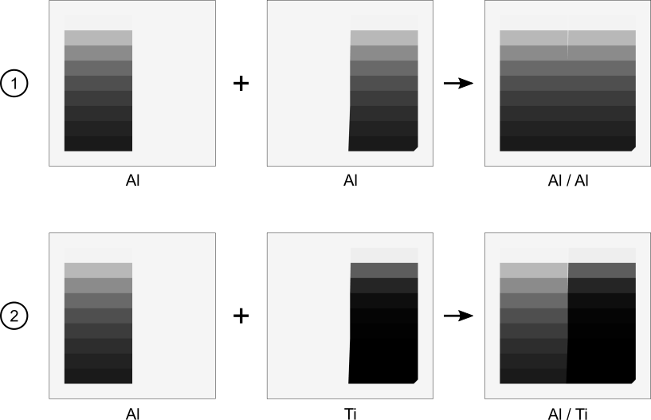
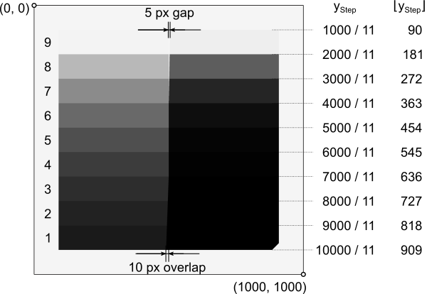

Module ctsimu.evaluation.test2D_SW_3
Test 2D-SW-3: Boolean models, contiguous surfaces
The term Boolean models refers to defined, reproducible behavior in regions where models overlap. In these regions, an object of higher priority is supposed to completely replace any other object of lower priority. This test employs the step wedge known from the former two scenarios, but splits it into a left-hand piece that shows straight edges in the projection image and a right-hand piece that is beveled (see the following picture). When positioned correctly, both pieces touch at the central three steps (contiguous surfaces). Between the upper three steps, there is a small gap of decreasing width, and for the lower three steps, both pieces overlap. The right-hand piece is supposed to completely replace the left-hand piece in those overlap regions

The picture shows example projection images for the two tests for 2D-SW-3. In each of the two sub-scenarios, the beveled right-hand piece is supposed to replace the left-hand piece in the region of the lower three steps where both models overlap. For the upper three steps, there remains a gap of decreasing width and at the central three steps, both surfaces touch.
The test considers two sub-scenarios. In the first scenario, the two pieces are both assumed to be of aluminum. In the projection image, there should be no detectable gray value change at the object boundaries for the lower six steps. For the second scenario, the left-hand piece is assumed to be of aluminum and the right-hand piece of titanium. There must be a detectable gray value change at pixels where the expected material boundaries are located. In all other areas, the gray values within each step should not change.
Both scenarios can be evaluated by the toolbox at once, but single evaluations of each sub-scenario are possible as well. Use the keywords Al_Al and Al_Ti as shown in the following example to correctly identify each sub-scenario.
from ctsimu.toolbox import Toolbox
Toolbox("2D-SW-3",
Al_Al = "2D-SW-3_Al-Al_metadata.json",
Al_Ti = "2D-SW-3_Al-Ti_metadata.json"
)
To detect locations of gray value changes and possible anomalies, the first step in the evaluation process is to calculate the gray value derivatives for each horizontal line of pixels. The scenario specifies a 1000x1000 pixel projection image. We assume a pixel coordinate system where x denotes the index within a row and y denotes the index within a column. The upper left pixel has index (0, 0), the lower right pixel is located at index (999, 999). In the derivative image, a pixel's gray value p^\prime is calculated as the difference of the original gray value p of its successor at position x+1 and its own gray value:
p^\prime (x, y) = p(x+1, y) - p(x, y) ~~~~ \forall~x \in [0, 998],~y \in [0, 999].
The last pixel column at x=999 is omitted as it has no successor. We therefore get a derivative image with a size of 999x1000 pixels. Numerical limitations may lead to minor deviations in regions where constant gray values are expected. We ignore any gray value changes below 0.04% of the free beam intensity, which corresponds to 24 gray values for the required free beam gray value of 60000. This leads to cleaned gray value derivatives
p^\prime_{\text{cleaned}}(x, y) = \begin{cases} 0 & p^\prime(x, y) < 24\,\text{GV} \\ p^\prime(x, y) & p^\prime(x, y) \geqslant 24\,\text{GV} \end{cases}.
The scenario requires monochromatic radiation with a photon energy of 80 keV. The specified densities of \rho_\text{Al}=2.6989\,\text{g}/\text{cm}^3 and \rho_\text{Ti}=4.506\,\text{g}/\text{cm}^3 and the mass attenuation coefficients \mu_\text{Al}/\rho=0.2018\,\text{cm}^2/\text{g} and \mu_\text{Ti}/\rho=0.4052\,\text{cm}^2/\text{g} (Hubbell et al.) lead to the specific attenuation coefficients \mu_\text{Al}=0.0544638/\text{mm} and \mu_\text{Ti}=0.18234/\text{mm} for the materials used in this scenario. The Beer-Lambert law of attenuation, the thickness of each step and the requirement for a free beam intensity of 60000 gray values lead to the expected gray values (after flat-field correction) listed in the following table.
| Step | 1 | 2 | 3 | 4 | 5 | 6 | 7 | 8 | 9 |
|---|---|---|---|---|---|---|---|---|---|
| Thickness in mm | 41.00 | 35.89 | 30.79 | 25.68 | 20.58 | 15.47 | 10.36 | 5.26 | 0.15 |
| Al gray value | 6432 | 8496 | 11217 | 14816 | 19560 | 25837 | 34127 | 45054 | 59512 |
| Ti gray value | 34 | 86 | 219 | 555 | 1407 | 3573 | 9073 | 22994 | 58381 |
| Δ | 6398 | 8410 | 10998 | 14261 | 18153 | 22264 | 25054 | 22060 | 1131 |
| y0 in px | 819 | 728 | 637 | 546 | 455 | 364 | 273 | 182 | 91 |
| y1 in px | 908 | 817 | 726 | 635 | 544 | 453 | 362 | 271 | 180 |
The table lists the total material thickness of each step of the spherical wedge that a ray from the source encounters. The expected analytical gray values from the law of radiation attenuation are listed, as well as the difference Δ between aluminum and titanium. In the projection image, each step is fully present in their respective region y\in[y_0, y_1]. The rows in between are forbidden lines where transitions between steps take place.}
Each step of the wedge occupies 1/11 of the height of the projection image. The locations y_\text{step} of their boundaries are listed on the right side of the graph. \lfloor y_\text{step} \rfloor gives the floor function value, i.e., the pixel index of the forbidden rows where the transitions from one step to another reside. The maximum widths of the material gap and the overlap region are shown.

The algorithm now treats each horizontal row of the image of gray value derivatives separately. For each row, the following procedure is applied.
-
The pixels with indices x\in[80, 99] and x\in[870, 919] are set to zero. This ignores any gray value transitions and pixel anomalies in the left and right border regions where gray values transition from free beam intensities to material intensities (i.e., where the wedge begins and ends).
-
Gap region. For each pixel row, the width of the air gap is calculated. For continuous coordinates x and y in the pixel coordinate system, the width w_\text{gap} (in pixels) is given by the linear function w_{\text{gap}}(y) = -\frac{5\,\text{px}}{3h_{\text{step}}} \left( y - 4h_{\text{step}} \right), with the height of a step h_\text{step} = \frac{1000\,\text{px}}{11}. See the above picture for reference. If we only allow discrete integer coordinates for the pixels, each row r therefore has an upper and a lower gap width: w_{\text{gap,upper}}(r) = -\frac{5\,\text{px}}{3h_{\text{step}}} \left( r - 4h_{\text{step}} \right), w_{\text{gap,lower}}(r) = -\frac{5\,\text{px}}{3h_{\text{step}}} \left( (r+1) - 4h_{\text{step}} \right). The left boundary of the air gap is marked by the pixel at x_{\text{gap,left}}=500, the first one to contain free-beam contributions in the intensity. The location of the right boundary depends on the gap width. We can calculate two pixel indices for the interval in which the boundary should be found, tolerances included: x_{\text{gap,right,0}} = x_{\text{gap,left}} + \lfloor w_{\text{gap,lower}} \rfloor - 1, x_{\text{gap,right,1}} = x_{\text{gap,left}} + \lfloor w_{\text{gap,upper}} \rfloor. Now we need to consider the following cases, ordered from highest to lowest priority.
-
If w_{\text{gap,lower}}\leq 0 we are not in a region where the gap is found (step number is lower than 7). In this case, we can continue with step~3 of the algorithm.
-
If 0 < w_\text{gap,lower}\leq 1 we assume that the air gap is too small to be fully resolved in between the two wedges. The sum of gray value changes across the complete gap region is calculated. It must match (i.e., be within 5% of) the expected gray value transition from the left material (Al) to the right material (Al or Ti). If this is the case, we set the gray value differences in the area of the gap to zero for all x\in\left[ 498, x_{\text{gap,right,1}} \right]. If the current row y is a forbidden row, we ignore the gray value differences and set the pixels to zero as well. If both conditions are not fulfilled, we set the value of the pixel at x=499 to the expected gray value difference and all other pixels in the considered range to zero. This puts the whole weight of the anomaly onto one pixel and makes counting anomalies easier afterwards.
-
If w_{\text{gap,lower}} > 1 it should be possible to resolve the air gap (i.e., there should be at least one pixel that contains the free beam intensity in the original projection).
-
At first, we treat the boundary between the material of the left wedge and the environment. In the difference image, the sum over the boundary pixels at x\in\left[ 498, 499 \right] should match (within 5%) the expected gray value change from the Al step to the free beam intensity. If y is a forbidden row, we only check if the slope of the profile points upwards towards higher gray values, i.e., we check for a positive gray value difference for both pixels under consideration. If any of these two conditions is fulfilled, we set the two boundary pixels to zero in the difference image. Otherwise we set the value of the pixel at x=499 to the expected gray value difference, and all other pixels in the considered range to zero.
-
We repeat this procedure for the right boundary, from environment to the right wedge, for the pixels at x\in \left[x_{\text{gap,right,0}}, x_{\text{gap,right,1}} \right]. It is checked whether there is the expected (within 5%) drop in gray values to lower intensities. For forbidden rows, it is only necessary that there is a negative difference (decreasing slope). Otherwise, an anomaly is introduced to the difference image, as described above.
-
-
-
Contact region. The pixel rows that belong to steps 4, 5 and 6 are considered. Only the three pixels at the material intersection are treated: x\in\left[ 498, 500 \right]. For the Al/Al scenario, nothing is done here. There is no expected gray value difference, and any existing gray value anomaly will persist for the final evaluation. For the Al/Ti scenario, the sum of gray value differences of these three pixels must match (within 5%) the expected gray value difference between Al and Ti. If the current row y is a forbidden row, the gray value differences for these three pixels must be zero or negative, i.e. the gray value must not rise at the transition from Al to Ti. If any of these two conditions is fulfilled, we set the value of these three pixels to zero in the difference image. Otherwise, we set the value of the pixel at x=498 to the expected gray value difference, and all other pixels in the considered range to zero.
-
Displacement region. The pixel rows for steps 1, 2 and 3 are treated very similarly. For the Al/Al scenario, no gray value difference is expected and nothing is done here. For the Al/Ti scenario, the leftmost and rightmost pixel coordinate x is calculated that should be considered when checking the gray value changes: x_{\text{boundary,0}}(r) = 498-\frac{10\,\text{px}}{3h_{\text{step}}} \left( r - 7h_{\text{step}} \right), x_{\text{boundary,1}}(r) = 500-\frac{10\,\text{px}}{3h_{\text{step}}} \left( (r+1) - 7h_{\text{step}} \right). The sum of gray value changes for all pixels in x\in\left[x_{\text{boundary,0}}, x_{\text{boundary,1}} \right] must match (within 5%) the expected gray value difference between Al and Ti. If the current row y is a forbidden row, the gray value differences for these three pixels must be zero or negative, i.e., the gray value must not rise at the transition from Al to Ti. If any of these two conditions is fulfilled, we set the value of these three pixels to zero in the difference image. Otherwise, we set the value of the pixel at x_{\text{boundary,1}} to the expected gray value difference, and all other pixels in the considered range to zero.
After this algorithm has been applied to each pixel row, all pixels in the difference image should have a value of zero. Pixels with other values are counted as anomalies. The mean gray value difference of all pixel anomalies is calculated.
Classes
class Test2D_SW_3 (resultFileDirectory='.', name=None, rawOutput=False)-
Expand source code
class Test2D_SW_3(generalTest): """ CTSimU test 2D-SW-3: Boolean Models. """ def __init__(self, resultFileDirectory=".", name=None, rawOutput=False): generalTest.__init__( self, testName="2D-SW-3", name=name, resultFileDirectory=resultFileDirectory, rawOutput=rawOutput) self.results = [] self.gv_deviation_limit = 25 # maximum expected in-material grey value deviation self.shrink = 0 self.leftOffset = 450 - self.shrink self.nPixels = 100 + 2*self.shrink self.steps = [ ImageROI(self.leftOffset, 818, self.leftOffset+self.nPixels, 910), ImageROI(self.leftOffset, 727, self.leftOffset+self.nPixels, 818), ImageROI(self.leftOffset, 636, self.leftOffset+self.nPixels, 727), ImageROI(self.leftOffset, 545, self.leftOffset+self.nPixels, 636), ImageROI(self.leftOffset, 454, self.leftOffset+self.nPixels, 545), ImageROI(self.leftOffset, 363, self.leftOffset+self.nPixels, 454), ImageROI(self.leftOffset, 272, self.leftOffset+self.nPixels, 363), ImageROI(self.leftOffset, 181, self.leftOffset+self.nPixels, 272), ImageROI(self.leftOffset, 90, self.leftOffset+self.nPixels, 181), ImageROI(self.leftOffset, 0, self.leftOffset+self.nPixels, 90) # free beam, not treated. ] # Step thicknesses: self.thicknesses = [41.0, 35.89, 30.79, 25.68, 20.58, 15.47, 10.36, 5.26, 0.15, 0.0] # Those pixel lines are between the steps of the wedge: self.forbidden_lines = [90, 181, 272, 363, 454, 545, 636, 727, 818, 909] # Use Beer-Lambert to calculate expected attenuation at 80 keV: # Data source: NIST https://physics.nist.gov/PhysRefData/XrayMassCoef/tab3.html muAl = 0.0544638 # /mm muTi = 0.18234 # /mm self.attenuationsAl = [] self.attenuationsTi = [] for d in self.thicknesses: attAl = math.exp(-d*muAl) attTi = math.exp(-d*muTi) self.attenuationsAl.append(attAl) self.attenuationsTi.append(attTi) def prepare(self): """ Preparations before the test will be run with the images from the pipeline. """ self.prepared = True def prepareRun(self, i): if i < len(self.subtests): if self.subtests[i] == "Al_Al": pass elif self.subtests[i] == "Al_Ti": pass else: raise Exception("{key} is not a valid subtest identifier for test scenario {test}".format(key=self.subtests[i], test=self.testName)) self.results.append(Test2D_SW_3_results()) else: if len(self.subtests) == 0: raise Exception("Please provide keywords that identify which metadata file belongs to which subtest. Test {testname} accepts the following keywords: 'Al_Al' and 'Al_Ti'.".format(testname=self.testName)) else: raise Exception("Number of provided image metadata files exceeds number of test runs ({expected}).".format(expected=len(self.subtests))) def is_near(self, expected, other): if expected != 0: # relative deviation no more than 5% return ((abs(other-expected)/abs(expected)) < 0.05) # 5% maximum deviation from expectation value else: return (abs(other) < self.gv_deviation_limit) # If the expected difference is 0, the maximum abs. GV deviation should be within the expected limit. def run(self, image): self.prepare() self.prepareRun(self.currentRun) i = self.currentRun subtestName = self.subtests[i] detectorSize = 1000 air = self.steps[-1] # The last ROI is the air ROI. airStats = image.stats(air) gvAir = airStats["mean"] print("Air grey value: {}".format(gvAir)) # Calculate a derivative image: derivative = copy.deepcopy(image) derivative.px[:,:-1] = derivative.px[:,1:] - derivative.px[:,:-1] derivative.crop(0, 0, 999, 1000) # Clean using the 0.04% deviation threshold. self.gv_deviation_limit = gvAir * 4e-4 # (0.04% of 60000 = 24) print("GV deviation limit: {}".format(self.gv_deviation_limit)) derivative.px[numpy.where(numpy.absolute(derivative.px) < self.gv_deviation_limit)] = 0 derivative.saveTIFF(filename="{dir}/{name}_{subname}_derivative_cleaned.tif".format(dir=self.resultFileDirectory, name=self.name, subname=subtestName), dataType="float32") # Calculate expected grey values: gvAl = [gvAir*att for att in self.attenuationsAl] gvTi = [gvAir*att for att in self.attenuationsTi] gvRight = gvAl # grey values for the wedge material to the right (either Al or Ti) if subtestName == "Al_Ti": gvRight = gvTi for step in range(0, 9): # only treat the first nine (true) steps, ignore free beam roi = self.steps[step] y0 = roi.y0 y1 = roi.y1 for y in range(y1-1, y0-1, -1): # -- LEFT BOUNDARY """ # Calculate GV drop for the left boundary at x=89,90: sum_across_left_boundary = numpy.sum(derivative.px[y,89:91]) # The sum over these two columns should represent a drop from GV(air) to GV(Al) if self.is_near(-diff_air_al, sum_across_left_boundary): # Set both of them to zero so that they are not counted as an anomaly: derivative.px[y,89:91] = 0 elif y in self.forbidden_lines: # If this is a forbidden line, only check if all slopes point downward. if not any(diff > 0 for diff in derivative.px[y,89:91]): derivative.px[y,89:91] = 0 else: # Set one of the pixels to the expectation value, the others to zero. -> introduces anomaly derivative.px[y,89] = 0 derivative.px[y,90] = -diff_air_al else: # Set one of the pixels to the expectation value, the others to zero. -> introduces anomaly derivative.px[y,89] = 0 derivative.px[y,90] = -diff_air_al # -- RIGHT BOUNDARY x_bevel = 883 - y x_right = 908 padding = 2 if x_bevel < 0: x_right += x_bevel padding = 5 x0 = x_right - padding x1 = x_right + padding sum_across_right_boundary = numpy.sum(derivative.px[y,x0:x1+1]) if self.is_near(diff_air_right, sum_across_right_boundary): derivative.px[y,x0:x1+1] = 0 elif y in self.forbidden_lines: # If this is a forbidden line, only check if all slopes point upward. if not any(diff < 0 for diff in derivative.px[y,x0:x1+1]): derivative.px[y,x0:x1+1] = 0 else: # Set one of the pixels to the expectation value, the others to zero. -> introduces anomaly derivative.px[y,x0:x1+1] = 0 derivative.px[y,x0] = diff_air_right else: # Set one of the pixels to the expectation value, the others to zero. -> introduces anomaly derivative.px[y,x0:x1+1] = 0 derivative.px[y,x0] = diff_air_right """ # We do not treat the outer boundaries anymore. # They are not subject to Boolean models or contiguous surfaces. # Instead, set the derivatives in these regions to zero. derivative.px[y,80:100] = 0 derivative.px[y,870:920] = 0 # Width of air gap in the upper third of the wedge, for upper and lower y-line boundary: w_gap_upper = (-11*5/(3*1000))*(y - (4*1000)/11) w_gap_lower = (-11*5/(3*1000))*((y+1) - (4*1000)/11) # Position of material interface: x_mat_upper = (-11*10/(3*1000))*(y - (7*1000)/11) x_mat_lower = (-11*10/(3*1000))*((y+1) - (7*1000)/11) diff_air_al = gvAir - gvAl[step] diff_air_right = gvAir - gvRight[step] diff_right_al = gvRight[step] - gvAl[step] # -- CENTRAL BOUNDARIES if w_gap_lower > 0: # air gap, steps 7, 8, 9 # Right x locations of the gap boundary (left is always at 500). # In the variable names, left and right refer to the leftmost # and rightmost pixel to consider for the sloped edge. x_gap_right0 = 500 + int(math.trunc(w_gap_lower)) - 1 x_gap_right1 = 500 + int(math.trunc(w_gap_upper)) # If the gap is far enough to separate Al, air and Al/Ti: if w_gap_lower > 1: # Check if there is a GV rise to air at x=498,499 sum_across_boundary_to_air = numpy.sum(derivative.px[y,498:500]) if self.is_near(diff_air_al, sum_across_boundary_to_air): # Set both of them to zero so that they are not counted as an anomaly: derivative.px[y,498:500] = 0 elif (y in self.forbidden_lines) and (not any(diff < 0 for diff in derivative.px[y,498:500])): derivative.px[y,498:500] = 0 else: # Set one of the pixels to the expectation value, the others to zero. -> introduces anomaly derivative.px[y,498:500] = 0 derivative.px[y,499] = diff_air_al # Check if there is a GV drop to the material at the right of the gap (Al/Ti): sum_across_boundary_to_right_material = numpy.sum(derivative.px[y,x_gap_right0:x_gap_right1+1]) if self.is_near(-diff_air_right, sum_across_boundary_to_right_material): # Set right gap boundary pixels to zero so that they are not counted as an anomaly: derivative.px[y,x_gap_right0:x_gap_right1+1] = 0 elif (y in self.forbidden_lines) and (not any(diff > 0 for diff in derivative.px[y,x_gap_right0:x_gap_right1+1])): derivative.px[y,x_gap_right0:x_gap_right1+1] = 0 else: # Set one of the pixels to the expectation value, the others to zero. -> introduces anomaly derivative.px[y,x_gap_right0:x_gap_right1+1] = 0 derivative.px[y,x_gap_right0] = -diff_air_right else: # if the gap is too narrow to separate left and right materials from the air gap # Only the total sum over the gap has to match the material GV difference: sum_across_complete_gap = numpy.sum(derivative.px[y,498:x_gap_right1+1]) if self.is_near(diff_right_al, sum_across_complete_gap) or (y in self.forbidden_lines): derivative.px[y,498:x_gap_right1+1] = 0 else: # Set one of the pixels to the expectation value, the others to zero. -> introduces anomaly derivative.px[y,498:x_gap_right1+1] = 0 derivative.px[y,499] = diff_right_al elif subtestName == "Al_Ti": # We can skip Al_Al because the expected boundary difference is zero. x_boundary_left = 499 - 1 x_boundary_right = 499 + 1 if x_mat_lower < 0: # lower wedge in steps 1, 2, 3 x_boundary_left += int(math.trunc(x_mat_lower)) x_boundary_right += int(math.trunc(x_mat_upper)) # Check if sum over central boundary matches expected grey value drop from left to right material: sum_across_boundary = numpy.sum(derivative.px[y,x_boundary_left:x_boundary_right+1]) if self.is_near(diff_right_al, sum_across_boundary): derivative.px[y,x_boundary_left:x_boundary_right+1] = 0 elif (y in self.forbidden_lines) and (not any(diff > 0 for diff in derivative.px[y,x_boundary_left:x_boundary_right+1])): derivative.px[y,x_boundary_left:x_boundary_right+1] = 0 else: # Set one of the pixels to the expectation value, the others to zero. -> introduces anomaly derivative.px[y,x_boundary_left:x_boundary_right+1] = 0 derivative.px[y,x_boundary_right] = diff_right_al derivative.saveTIFF(filename="{dir}/{name}_{subname}_anomalies.tif".format(dir=self.resultFileDirectory, name=self.name, subname=subtestName), dataType="float32") absDevSum = numpy.sum(numpy.absolute(derivative.px)) anomalies = numpy.where(numpy.absolute(derivative.px) > 0) anomalyCount = len(anomalies[0]) anomalyMean = "-" if anomalyCount > 0: anomalyMean = absDevSum / anomalyCount print("Number of detected grey value anomalies: {}".format(anomalyCount)) print("Mean grey value difference of all anomalies: {}".format(anomalyMean)) summaryText = "# Evaluation of Test {name}, {subname}:\n".format(name=self.name, subname=subtestName) summaryText += "# \n" summaryText += "# Number of detected grey value anomalies: {} \n".format(anomalyCount) summaryText += "# Mean anomaly grey value: {} \n".format(anomalyMean) if anomalyCount > 0: summaryText += "# \n" if anomalyCount <= 60000: summaryText += "# Anomaly positions:\n" summaryText += "# x\ty\n" for i in range(len(anomalies[0])): summaryText += "{x}\t{y}\n".format(x=anomalies[1][i], y=anomalies[0][i]) else: summaryText += "# Too many anomalies for a text file. Please use the anomaly image file to inspect anomalies.\n" summaryFileName = "{dir}/{name}_{subname}_summary.txt".format(dir=self.resultFileDirectory, name=self.name, subname=subtestName) with open(summaryFileName, 'w') as summaryFile: summaryFile.write(summaryText) summaryFile.close() #self.plotResults() self.currentRun += 1 return image def followUp(self): pass def plotResults(self): passCTSimU test 2D-SW-3: Boolean Models.
Ancestors
Methods
def is_near(self, expected, other)-
Expand source code
def is_near(self, expected, other): if expected != 0: # relative deviation no more than 5% return ((abs(other-expected)/abs(expected)) < 0.05) # 5% maximum deviation from expectation value else: return (abs(other) < self.gv_deviation_limit) # If the expected difference is 0, the maximum abs. GV deviation should be within the expected limit. def prepare(self)-
Expand source code
def prepare(self): """ Preparations before the test will be run with the images from the pipeline. """ self.prepared = TruePreparations before the test will be run with the images from the pipeline.
def prepareRun(self, i)-
Expand source code
def prepareRun(self, i): if i < len(self.subtests): if self.subtests[i] == "Al_Al": pass elif self.subtests[i] == "Al_Ti": pass else: raise Exception("{key} is not a valid subtest identifier for test scenario {test}".format(key=self.subtests[i], test=self.testName)) self.results.append(Test2D_SW_3_results()) else: if len(self.subtests) == 0: raise Exception("Please provide keywords that identify which metadata file belongs to which subtest. Test {testname} accepts the following keywords: 'Al_Al' and 'Al_Ti'.".format(testname=self.testName)) else: raise Exception("Number of provided image metadata files exceeds number of test runs ({expected}).".format(expected=len(self.subtests)))
Inherited members
class Test2D_SW_3_results-
Expand source code
class Test2D_SW_3_results: """ Results for one sub test. """ def __init__(self): # Horizontal Profile Data: self.profiles = [] # Horizontal grey value profile for each lineResults for one sub test.